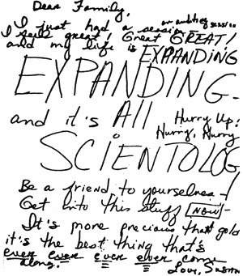

CHAPTER FOUR
The Death of Susan Meister
Susan Meister was introduced to Scientology in San
Francisco in the autumn of 1970. By November, she was working at the San Francisco Org.
She was an eager convert, and tried to persuade her parents to become Scientologists. She
wanted to be close to the "Founder," and contribute to "Clearing the
Planet," so in February 1971 she joined the Sea Org. By the end of the month she was
aboard the "Flagship" Apollo. Her stay there was brief and tragic. On
May 8, she wrote to her mother:
Mother,
Do you recall talking to me about WW III - and
where it would start if it were to start - father and most everyone else maintained that
it would start in either China or Russia vs. U.S. and you said - oh no- it would originate
in Germany - that the Nazis hadn't given up yet - ? Well babe, you were right - there is a
new Nazi resurgence taking place in Germany - so now it's a race between the good guys in
the white hats (Scientologists) [sic] and the Leipzig death camp (Nazis) [sic]
the bad guys in the black hats - we'll win of course - but the game is exciting. Truth is
stranger than fiction. As Alice [in Wonderland] says "Things get curiouser and
curiouser!" Get into Scientology now. It's fantastic.
Love, Susan
Four days later, Susan Meister wrote this letter:
 Dear Family, I just had a session an auditing session I feel
great! Great GREAT! and my life is EXPANDING EXPANDING - and it's ALL SCIENTOLOG [sic]
Hurry Up! Hurry, Hurry Be a friend to yourselves - Get into this stuff NOW - It's more
precious than gold it's the best thing that's ever ever ever ever come along. Love, Susan. |
Her last letter to her parents from the
Apollo was dated June 1971. In it she thanked them for a birthday card, and a variety of
gifts, including a new dress. She continued, showing the effect upon a young and
impressionable mind Hubbard's obsession with the "great conspiracy" against him:
I can't tell you exactly where we are. We have
enemies who are profiting from peoples' ignorance and lack of self-determinism
and do not wish to see us succeed in restoring freedom and self-determinism
to this planet's people. If these people were to find out where we are located - they
would attempt to destroy us. Therefore, we are not allowed to say where this ship is
located.
She once more urged her mother to read Hubbard's
books, and take Scientology courses. Ten days after writing the letter, Susan was dead.
George Meister, Susan's father, was away from his Colorado home on a business trip when
Guardian's Office Public Relations man Artie Maren phoned. George Meister met Maren the
next day, and was presented with an unsigned "fact sheet" giving the
Scientologists' account of events as a series of numbered statements.
Meister told Artie Maren that he wanted the body to be
flown back to the U.S. for burial. Meister received a letter from Bob Thomas at the Church
of Scientology in Los Angeles explaining that the "Panamanian" owners of the Apollo
were not obliged to give information to the Church of Scientology. However, the Apollo's
captain, Norman Starkey, had offered to pay for a Christian burial in Morocco, but
regretted that they would not pay for the body to be returned to the United States.
George Meister, dazed by the news, decided to go to
Morocco to try and verify the circumstances of his daughter's death. He was told he would
be able to see the body in the morgue in Safi. He left for Morocco on July 14.
Meister was met at the airport in Casablanca by Sea
Org member Peter Warren, who escorted him to the Marhaba Hotel. Meister met the U.S.
vice-consul, Jack Galbraith, and explained the purpose of his mission.
During this meeting with Gaibraith, Warren phoned to
say he would drive Meister the 120 miles to Sail. Warren said the Apollo was
already past its scheduled departure date, but would wait a little longer, because of
Meister's presence.
Meister arranged to leave the following morning at
6:00 a.m., accompanied by Galbraith, Warren and a Sea Org girl called Joni. Their first
stop in Sail was the police station. Meister says the police official he spoke to
genuinely tried to help. He showed Meister a photograph taken aboard the Apollo,
showing the dead girl.
According to her father, Susan was "lying on a
bunk, wearing the new dress her mother had made for her, her arms crossed with a long
barreled revolver on her breast. A bullet hole was in the center of her forehead and blood
was running out of the corners of her mouth. I began to wonder how Susan could possibly
shoot herself in the center of her forehead with the long barreled revolver. She would
have had to hold it with both hands at arms length. There were no powder burns on her
forehead, which certainly would have been the case if the gun was against her forehead as
it would have to be to shoot herself as the photograph appeared."
The police said the revolver was not available for
inspection. Meister was shown the police report, but it was in French, which neither he
nor Galbraith spoke. Meister was told that the police were unwilling to release copies of
either the report or their photographs.
Meister and Galbraith went on to the hospital where
Susan's body had been taken. During the autopsy her intestines and her brains had been
removed. Meister says that Warren admitted that he had given permission, believing that
Susan might have been on drugs. Meister asked to see the body, which he had been told was
in a refrigerated morgue. To his amazement, he was told by a doctor that they did not know
where the body was.
The next day, with Warren and Joni still in
attendance, they had an audience with the Pasha of Safi. The Pasha told Meister he could
not have copies of the police report, or the photographs. He said he had transferred the
records to the provincial capital, Marrakesh. When Meister pressed him to find the
whereabouts of Susan's body, the Pasha told him the interview was over.
Meister asked Warren if he could see Ron Hubbard. He
knew that Hubbard's daughter, Diana, was about Susan's age. In Meister's own words:
Passing the guarded gates into the port
compound, we had our first look at Hubbard's ship, Apollo. It appeared to be old, and as
we boarded it, the girls manning the deck gave us a hand salute. All were dressed in work
type clothing of civilian origin. Most appeared to be young. Upon boarding we were shown
the stern of the ship, which was used as a reading room, with several people sitting in
chairs reading books. The mention of Susan seemed to meet disapproval from those on board
.... We were shown where Susan's quarters were in the stern of the ship below decks where
it appeared fifty or so people were sleeping on shelf type bunks. Susan's letter had
mentioned she shared a cabin all the way forward with one other person. Next we were shown
the cabin next to the pilot house on the bridge where the alleged suicide had taken place.
It was a small cabin and appeared to be one where a duty officer might catch some sleep
while underway .... We were not allowed to see any more of the ship .... I requested an
interview with Hubbard as he was then on board. Warren said he would ask .... He returned
in about a half hour and said Hubbard had declined to see me.
Meister and Galbraith returned to Casablanca. Meister
found that the thirty or so films he had been carrying with him had disappeared, including
the film he had shot of Sail and the Apollo.
As I was preparing to leave the hotel [to take
the flight home], the telephone in my room rang. It was Warren who said he had to see me
at once on a matter of utmost urgency. I told him I would see him in the lobby .... Warren
came into the lobby a very frightened man. His face was pale and he motioned me to a chair
in the corner of the lobby... he told me he was sent to make a settlement with me in cash.
Meister was outraged by this suggestion, and told
Warren to deal with his attorney. "At the airport, just prior to boarding, I was
accosted by a large man in a pinstripe suit carrying a briefcase. He said, 'We are
watching you and so are the CIA and the FBI.' "
After his return to the U.S., Meister found that his
daughter had been buried in a Casablanca cemetery, wrapped in a burlap sack, before his
visit to Morocco. He arranged to have the body exhumed and shipped to the U.S. in a sealed
tin coffin. His local Health Authority, in Colorado, received an anonymous letter before
the body was returned. It said in part:
There has been a Cholera epidemic in Morocco...
there have been a recorded two to three hundred deaths. And it's been brought to my
attention that the daughter of one George Meister died in Morocco, either by accident or
from cholera, probably the latter.
The Los Angeles Times picked up the story:
"According to a Nov. 11, 1971, letter from Assistant Secretary of State David M.
Abshire to the Senate Foreign Relations Committee - the Apollo's Port Captain
threatened in the presence of the American Vice Consul from Casablanca, William J.
Galbraith, that he had enough material, including compromising photographs of Miss
Meister, to smear Mr. Meister. . . . Meister is said to have left Morocco the day before
the threat was made."
The Scientologists then launched a campaign against
Galbraith, with little success; for example, telling newspaper men that he had threatened
that the CIA would sink the Apollo!
Meister received anonymous letters saying that his
daughter had made pornographic films, and that she had been a drug addict. Meister says he
continued to be harassed for six years. The harassment stopped around the time of the FBI
raids on the Guardian's Office, in the Summer of 1977.
If Susan Meister did commit suicide, several questions
remain. She had been aboard the Apollo for four months. During that time, she sent
consistently enthusiastic letters to her parents. To commit suicide, she must have
undergone a very rapid mood change. She must also have lost her faith in the efficacy of
Scientology. If this was so, what had caused this sudden shift of opinion, and why didn't
she leave the Apollo?
Letters were censored before leaving the Apollo,
and the passports of those aboard were held by the Ethics Office. So perhaps she was
unable to write the truth of what she had discovered, and unable to leave the ship.
Perhaps.
There is no concrete evidence to show that Susan
Meister's death was not suicide. But the whole affair is compounded by the events which
followed. By creating the Sea Org, and taking to the sea, Hubbard had successfully put
himself beyond the law. There was no coroner's investigation into the death. It is likely
that a verdict at least of foul play would have been returned if there had been such an
investigation.
FOOTNOTES
Additional sources:
"Scientology Said Susan Was a Suicide," article by George Meister; George
Meister testimony, Clearwater Hearings, May 1982; letter to the author from George
Meister, 13 June 1986; also Urquhart interview, correspondence with Amos Jessup. |